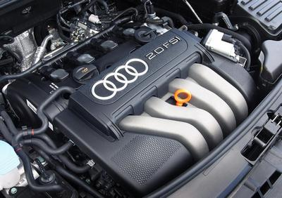
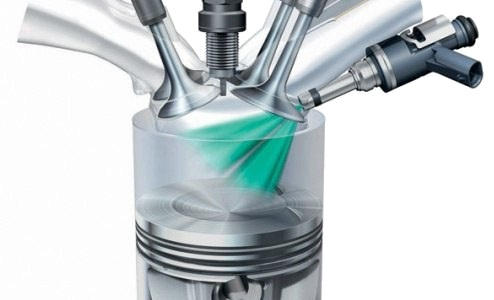
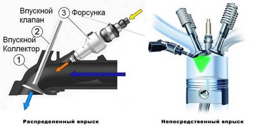
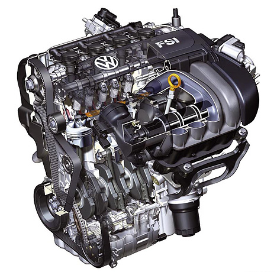
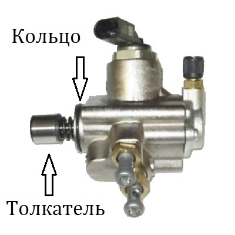
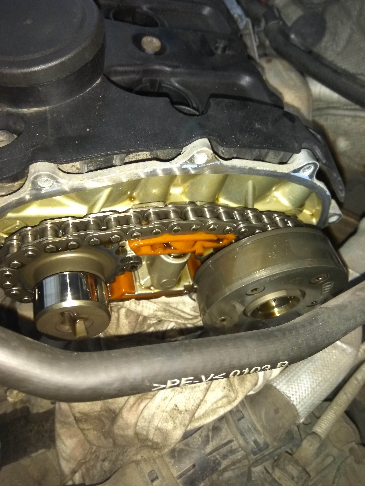
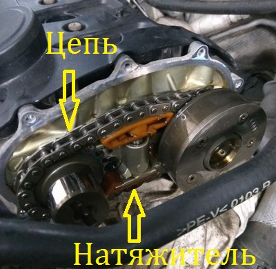

Двигатель 2.0 FSI: характеристики, неисправности, особенности обслуживания
В середине 2000-х концерн Volkswagen/Audi начал устанавливать на свои модели двигатели семейства FSI/TFSI, самым распространённым из которых стал атмосферный мотор 2.0 FSI, а в последствии появилась и его турбированная версия, получившая маркировку TFSI. В нашей статье мы рассмотрим технические характеристики данных моторов и опыт их эксплуатации.
Начнём с того, что аббревиатура «FSI» расшифровуется как Fuel Stratified Injection, что в переводе означает послойный впрыск топлива. Это означает, что впрыск топлива в данных моторах осуществляется непосредственно в камеру сгорания, т.е. топливные форсунки располагаются не в впускном коллекторе как у большинства атмосферных моторов с распределённым впрыском, а непосредственно в камере сгорания, впрыскивая топливо под высоким давлением, тем самым обеспечивая большую топливную эффективность и поышенные динамические характеристики мотора. Двигатели семейства 2.0 FSI обладают более высоким крутящим моментом и более низким расходом топлива в сравнении с моторами с распределённым впрыском аналогичного объёма. Атмосферный мотор 2.0 FSI при мощности в 150 л.с обладает крутящим моментом в 200 Н/М и расходом топлива 8-9 л в городском режиме, и 6-7 л за городом, что является достаточно скромным показателем для двигателя объемом 2л.
Модификации мотора 2.0 FSI
Двигатель 2.0 FSI устанавливался на следующие модели концерна Volkswagen: Skoda Octavia A5, Volkswagen Passat B6, Volkswagen Golf 5, Volkswagen Jetta, Seat Leon, Seat Toledo, Seat Altea.
Важно отметить, что двигатель 2.0 FSI выпускался в двух вариантах соответствия нормам токсичности - Евро 2 и Евро 4. Моторы, соответствующие нормам токсичности Евро 4 имели маркировку BLY, BLR, BVY. Двигатель с маркировкой BVZ соответствует нормам Евро 2. Самым неприхотливым и надёжным оказался двигатель BVZ, который в отличии от модификаций BLY, BLR, BVY не имеет клапана ЕГР, который необходим лишь для соответствия нормам токсичности и который приносит немало хлопот в процессе эксплуатации, так же данный мотор менее чувствителен к качеству топлива. В отличии от своих собратьев, которые соответствуют нормам токсичности евро 4, двигатель BVZ не имеет проблем с запуском в холодное время года. Так же на данном двигателе установлены обычные свечи с никелевым электродом в отличии от моторов евро 4, которые агрегатировались свечами зажигания с платиновым поджигателем.
Устройство и особенности эксплуатации двигателя 2.0 FSI
Рассмотрим более подробно строение двигателя 2.0 FSI. Мы уже обсудили, что в данном моторе реализован непосредственный впрыск топлива посредством расположения топливных форсунок в камере сгорания. Теперь следует сказать, что топливо подаётся в камеру сгорания под большим давлением с помощью ТНВД (топливного насоса высокого давления), приводимого в действие распредвалом. Фактически это принцип работы дизельного двигателя. Сразу отметим, что у ТНВД есть слабое место это толкатель, у атмосферных моторов FSI он как правило ходит достаточно долго 150-200 тысяч, но у моторов TFSI вследствии большей форсировки нередки случаи, когда толкатель испытывая большие нагрузки разрушается, его частицы разлетаются в механизме газораспределения, что приводит к очень дорогостоящему ремонту. Поэтому рекомендуется заменить его на пробеге 120 - 150 тысяч, для замены можно использовать аналог фирмы Febi артикул 13762 либо фирмы Ina артикул 711024510, переплачивать за оригинал необязательно так как данную запчасть для Volkswagen делает эта же фирма INA (Германия), в коробке Febi так же будет лежать запчасть, произведённая этой же компанией. При замене толкателя так же нужно заменить уплотнительное кольцо ТНВД, хорошим вариантом будет фирма Elring (Германия) артикул 174270.
У моторов 2.0 FSI реализован ременной привод механизма ГРМ, что обуславливает сервисные интервалы замены зубчатого ремня и роликов. В мануале официалов указан интервал замены зубчатого ремня каждые 180 тыс. км., конечно столько ремень не ходит, поэтому у владельцев автомобилей с двигателем 2.0 FSI, которые соблюдали данные указания, ремень выхаживал от 90 до 120 тыс. после чего он разрывался, что приводило к встрече клапанов с поршнями и как следствие дорогостоящему ремонту силовой установки. Настоятельно рекомендуется менять ремень ГРМ и ролики на двигателе 2.0 FSI каждые 60 тыс. км. Для замены ремня ГРМ рекомендуются комплекты фирм Ina артикул 530044510 и фирмы Contitech артикул ct1088k3. Водяной насос так же лучше заменить вместе с ремнем ГРМ, хотя срок его службы значительно превосходит интервал замены ремня ГРМ, но в случае если возникнет протекание уплотнительного кольца помпы придется оплатить дорогостоящую работу по её замене. Хорошими вариантами для замены помпы на 2.0 FSI будет водяной насос фирмы Saleri (Италия) артикул PA1270A или фирмы Hepu (Германия) артикул P545.
Непосредственный впрыск не единственное техническое решение использованное в моторе 2.0 FSI, следует отметить, что на выпускном распредвале установлен фазовращатель, регулирующий фазы газораспределения, что в свою очередь так же повышает КПД мотора.
Фазовращатель на выпускном распредвале, связывается с впускным распредвалом посредством цепи, т.е. можно сказать что механизм ГРМ имеет как ременной привод так и цепной одновременно. Натяжение цепи фазовращателя происходит с помощью гидравлического натяжителя. На пробеге 150-200 тыс. км. у двигателя 2.0 FSI появляется характерный дизельный звук, это связано с растяжением цепи, так же появляется выработка на башмаке натяжителя цепи. Важно, при появлении характерного металлического звука работы мотора, напоминающего работу дизельного мотора, необходимо произвести замену цепи и её натяжителя. Для замены понадобится сама цепь, можно использовать аналог фирмы Febi артикул 25227, в коробке будет лежать цепь фирмы Jivis, которая с завода установлена на данном моторе, т.е. вы купите оригинал по доступной цене, не переплачивая за оригинальную коробку VAG. Натяжитель в оригинале идет производства фирмы Ina (Германия), поэтому рекомендовано взять натяжитель Ina артикул 551003910 либо Ruville артикул 3457002, в коробке которого мы так же найдём натяжитель цепи производства фирмы INA так как обе компании входят в концерн Schaeffler (Германия). Так же для замены понадобится болт фазовращателя, оригинальный номер 06D109281D. Данный болт имеет конус и головку под спец инструмент. Так же нам понадобится прокладка клапанной крышки, предпочтительно фирмы Reinz (Германия) артикул 713604700, прокладка крышки механизма ГРМ, Elring артикул 876673 и уплотнительное кольцо ТНВД Elring (Германия) артикул 174270. Работы по замене рекомендовано производить у официального дилера так как у кустарных мастеров нет специнструмента для выполнения данных работ, а самое главное практических навыков, так же официалы дают гарантию на выполненные работы, что очень важно для подобного ремонта.
Существует неприятная особенность двигателей с непосредственным впрыском, в частности мотора 2.0 FSI - это загрязнение впускных клапанов и коллектора масляными парами, это связано с спецификой работы непосредственного впрыска, топливовоздушная смесь попадает в камеру сгорания не через впускные клапана как у двигателей с распределённым впрыском, а напрямую, в камеру сгорания, вследствие чего происходит появление маслянистых отложений на впускных клапанах. Данная проблема в большей степени проявляется у двигателей евро 4, у которых установлен клапан ЕГР.
Довольно часто трескается трубка вентиляции картерных газов, это связано с её близким расположение к блоку цилиндров и высокой тепловой нагрузкой, оригинальный номер детали 06F133241D.
Если говорить о масложоре, то атмосферных моторов 2.0 FSI, он как правило обходит стороной, что не скажешь о турбированных модификациях 2.0 ТFSI.
Подводя итоги, нужно сказать, что двигатель 2.0 FSI имеет низкий расход топлива, хорошие динамические характеристики, но в силу своей технологичности предъявляет определенные требования к своей эксплуатации.